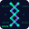
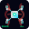

🎨 Favicon Gallery
AI Surgical Motion Knowledge Transfer Library - ファビコンデザイン候補
Neural Analytics
16×16
32×32
64×64
AI脳波解析
ニューラルネットワークと脳波パターンの融合。ブルー〜シアンのグラデーションで先進的なAI解析を表現。
ニューラル
脳波パターン
AI解析

Gene Analysis
16×16
32×32
64×64
デジタルDNA解析
DNA二重螺旋とバイナリコードの組み合わせ。遺伝子解析と精密医療を表現。グリーン〜ブルーの生命感あるグラデーション。
DNA螺旋
デジタル
遺伝子解析
 64×64
64×64
ホログラフィック心臓
3D心臓モデルのワイヤーフレーム。レッド〜ピンクのグラデーションと拍動アニメーションで生体データを可視化。
3Dモデル
拍動アニメ
ECG波形
Quantum Medicine
16×16
32×32
64×64
量子医療クロス
医療十字と量子ドットの組み合わせ。ホワイト〜ライトブルーで粒子の流れをアニメーション。
量子粒子
医療十字
エネルギーフロー

Biometric Scan
16×16
32×32
64×64
バイオメトリックアイ
虹彩認証パターンとデータ解析。パープル〜ゴールドのグラデーションとスキャニングアニメーション。
虹彩認証
スキャン
生体認証

Nanobot Medicine
16×16
32×32
64×64
ナノロボット医療
マイクロロボットと血管ネットワーク。メタリックシルバー〜ブルーで循環アニメーション。
ナノテク
血管内
10nm精度